User Research
User Interviews
During our first user interviews we found that users valued the transparency of rescues with their donation money, values researching the dogs they adopt before they commit, are motivated by their love of animals, and have challenges with keeping a pet like their living situation, time and money. With this in mind my team and I came up with ideas to solve these problems by renewing the design of the website and redesigning the navigation.
What We Found
- Prefers transparency in charitable organizations
- Wants to make and impact
- Wants to do research before adopting or fostering
- Loves animals
- Enjoys helpipng puppies find a home
- Doesn't have the time for fostering or adopting
Affinity Diagram
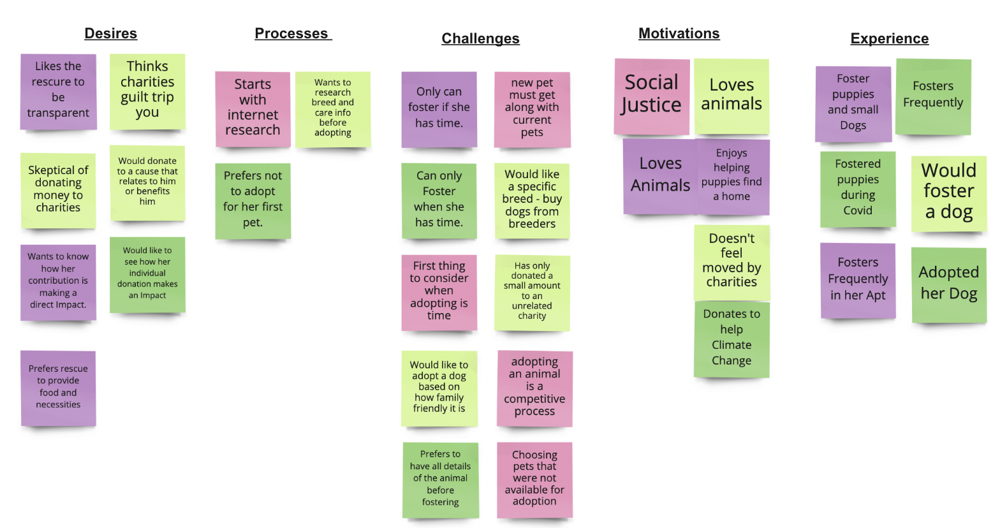Proto Persona
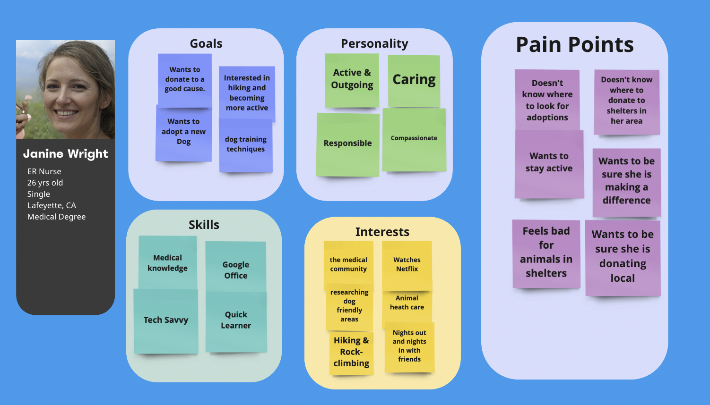Competator Research
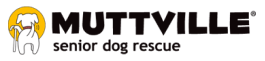 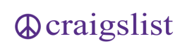Our competators were chosen based on the similarity of the mission the organization had to our own chosen organizations mission. The strongest competator was Muttville for its fun and clean website design, clear call to actions, relevant information and light hearted experience.
Definition
User Insight Statement
During user interviews, my team and I identified two different user insights that we wanted to consider in the new design of the website.
User Insight 1:
During our user interviews, we discovered that individuals are reluctant to adopt mainly due to the unknown complications and lack of information on dogs, and because of uncertainty about where their donations will be allocated to help dogs in need.
User Insight 2:
During our user interviews, we discovered that individuals are reluctant to donate due to the lack of transparency about where their money is going. Because potential donors are not able to see where their money is going they are distrustful of the organization.
User Persona
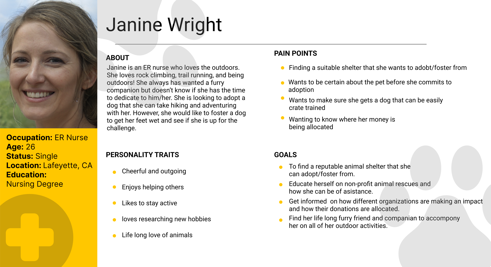Empathy Map
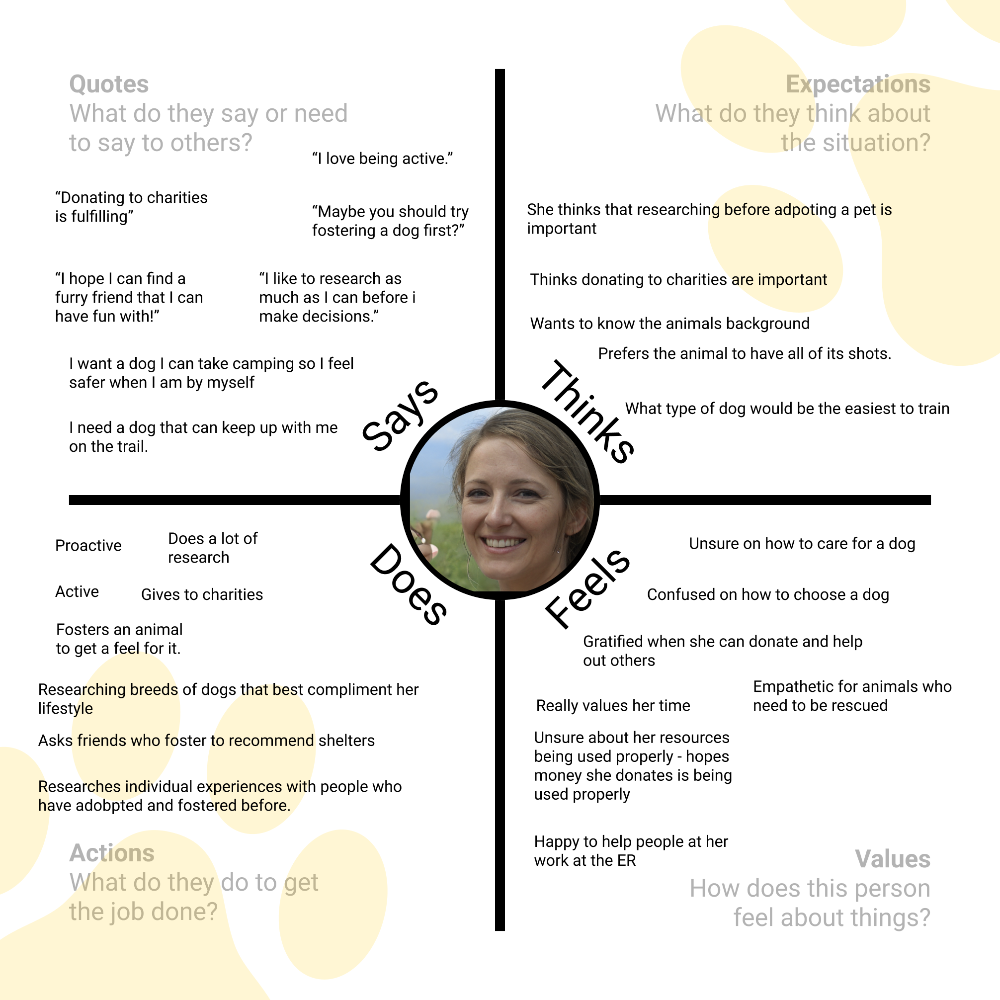Value Proposition
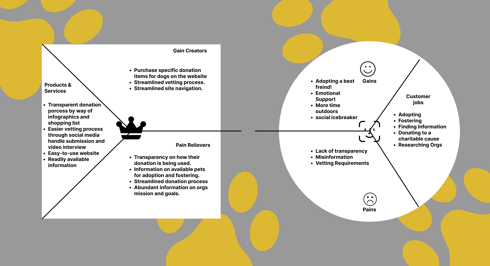Ideation
New Sitemap
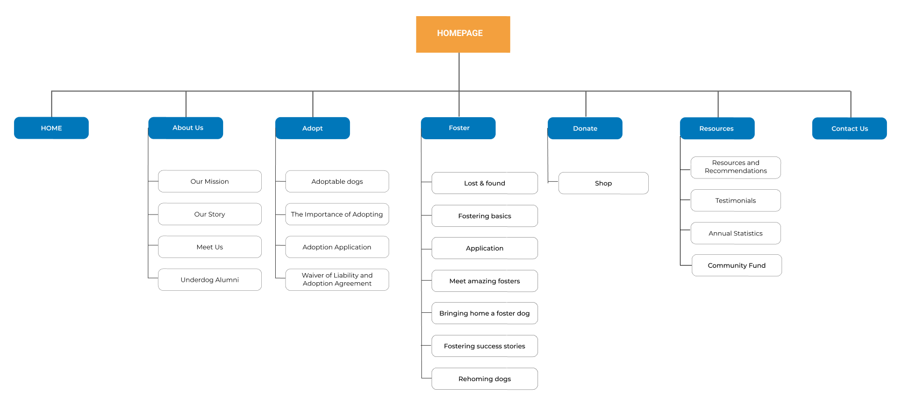User Flow
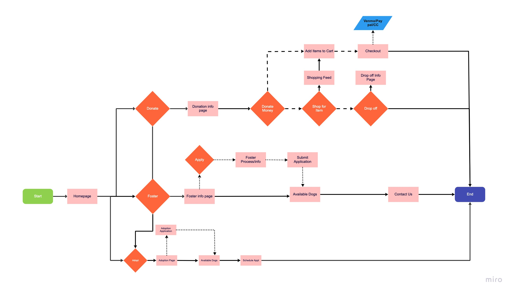Sketches and Wireframes
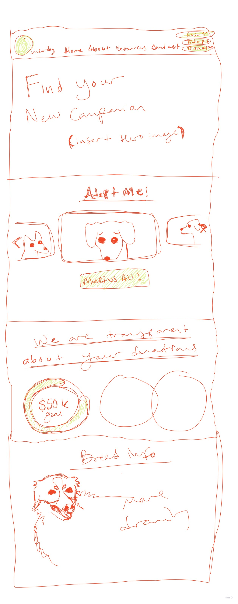
Prototyping
First Iterations
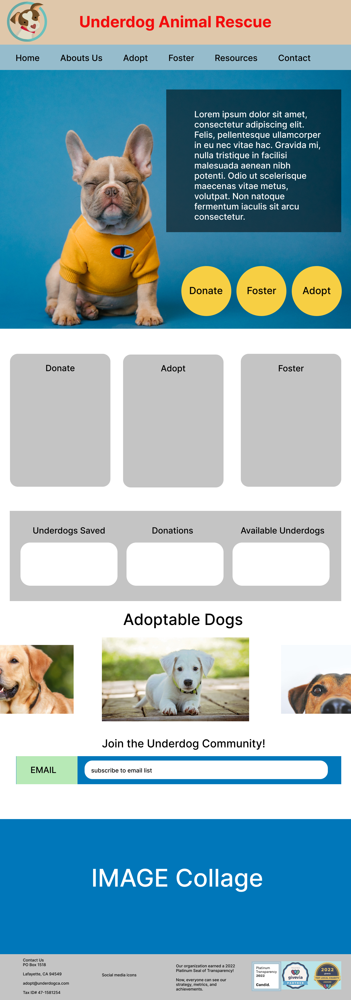 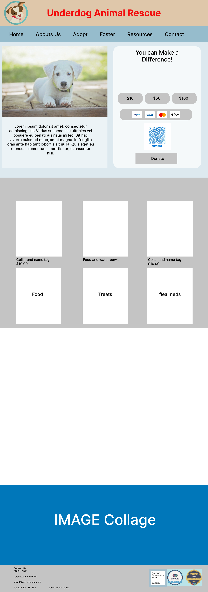Final Prototype


Conclusion
Overall I learned from this project how to balance the needs of users for the design of an interface to include different features from user needs and wants. The need to be able to have easy access to a donation, foster, and adopt button. the need to see where their donations are spent, the need to see clear adoption choices and more. In the future I think I'd take the opportunity to build out separate pages for each dog, make the checkout button clearer, and make the call to action clearer for the shopping page.